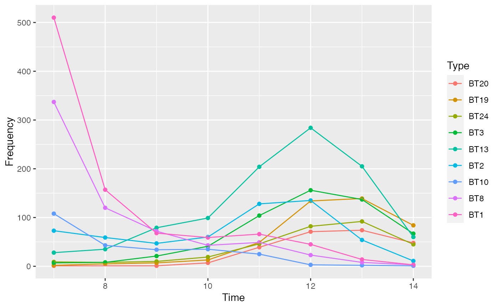
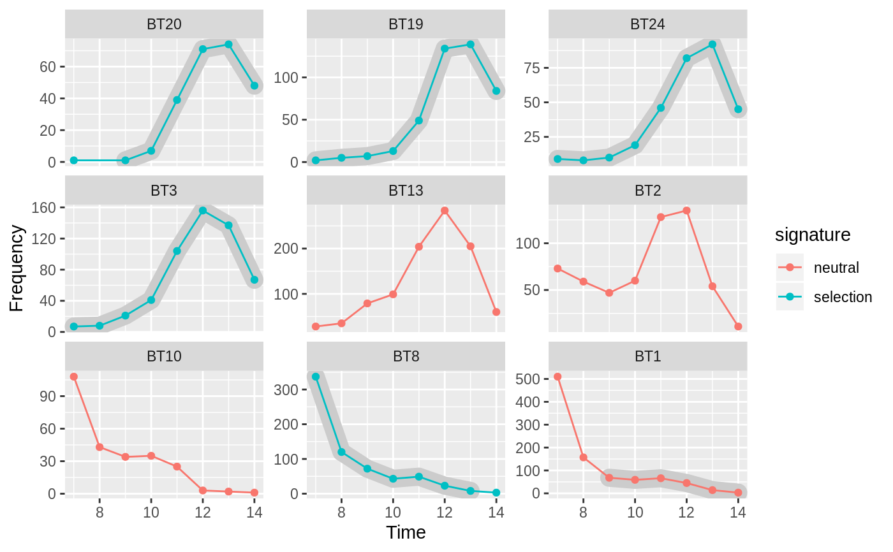

plot_date produces an activity or tempo plot.
plot_date(object, ...) plot_time(object, dates, ...) # S4 method for DateEvent plot_date( object, type = c("activity", "tempo"), event = FALSE, select = 1, n = 500 ) # S4 method for CountMatrix,numeric plot_time(object, dates, facet = FALSE)
| object | An object of class DateModel to be plotted. |
|---|---|
| ... | Further arguments to be passed to internal methods. |
| dates | A |
| type | A |
| event | A |
| select | A |
| n | A length-one non-negative |
| facet | A |
A ggplot object.
plot_time produces an abundance vs. time diagram.
Displaying FIT results on an abundance vs. time diagram is adapted from Ben Marwick's original idea.
plot_date plots the probability estimate density curves of
archaeological assemblage dates (event and
accumulation dates; Bellanger and Husi 2012).
The event date is plotted as a line, while the accumulation
date is shown as a grey filled area.
The accumulation date can be displayed as a tempo plot (Dye 2016) or an activity plot (Philippe and Vibet 2017):
A tempo plot estimates the cumulative occurrence of archaeological events, such as the slope of the plot directly reflects the pace of change.
An activity plot displays the first derivative of the tempo plot.
Results of the frequency increment test can be displayed on an abundance
vs. time diagram aid in the detection and quantification of selective
processes in the archaeological record. If roll is TRUE,
each time series is subsetted according to window to see if episodes
of selection can be identified among decoration types that might not show
overall selection. If so, shading highlights the data points where
test_fit identifies selection.
Bellanger, L. & Husi, P. (2012). Statistical Tool for Dating and Interpreting Archaeological Contexts Using Pottery. Journal of Archaeological Science, 39(4), 777-790. doi: 10.1016/j.jas.2011.06.031 .
Dye, T. S. (2016). Long-Term Rhythms in the Development of Hawaiian Social Stratification. Journal of Archaeological Science, 71, 1-9. doi: 10.1016/j.jas.2016.05.006 .
Philippe, A. & Vibet, M.-A. (2017). Analysis of Archaeological Phases using the CRAN Package ArchaeoPhases. HAL, hal-01347895, v3.
Other plot:
plot_bar,
plot_diversity,
plot_line,
plot_matrix,
plot_spot()
N. Frerebeau
## Coerce the merzbach dataset to a count matrix ## Keep only decoration types that have a maximum frequency of at least 50 keep <- apply(X = merzbach, MARGIN = 2, FUN = function(x) max(x) >= 50) counts <- as_count(merzbach[, keep]) ## Group by phase ## We use the row names as time coordinates (roman numerals) dates <- as.numeric(utils::as.roman(rownames(counts))) ## Plot abundance vs time plot_time(counts, dates)plot_time(counts, dates, facet = TRUE)